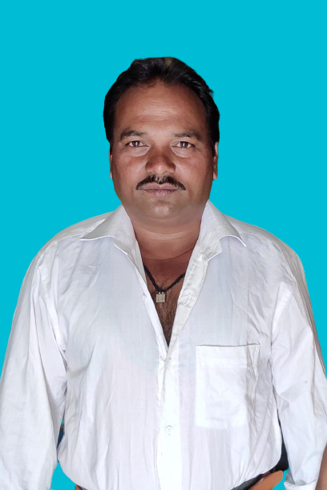

The Real Father
Pappu Sonere S/O Ramchandra Sonere born in 07-May-1977 . his parent was very poor but he had a lot of knowledge and he was passinate to learn new things . In his early age he got many appricition by elder and he
was
famous
for
his work and even those poeple elder than him , they also used to call him Pappu Bhayya
.In both physically and mentally he was very strong . he was doing hard work and when he found anyone in need he alwayse try to help
others
, but as a result he never got something .he was very curious about everything and he wanted to know everything about particullar things and he wanted to know to happing behind the box .He had a God gifted brain he learnt everything in
only once but due to family curcumstance he won't be able to study . His parent alwayse switch their town for food that is the big reasone he won't able to study .But he had a dream Due to situation i won't able to study , but
i will make my children educate.
and his was to become true and suddenly he left us. he alwayse try to push his children ahead in thier carrer and he wanted to his children got job and live thier life with ease .